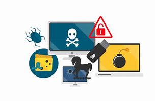

"El antivirus es tu guardián digital: mantenlo activo y actualizado."
Malware es un término que abarca cualquier tipo de software malicioso diseñado para dañar o explotar cualquier dispositivo, servicio o red programable.
Tipos de Malware
- Virus: Programas maliciosos que se adjuntan a otros programas o archivos, propagándose cuando estos se ejecutan.
- Spyware: Software que recopila información sobre ti y tu actividad en línea sin tu conocimiento.
- Adware: Software que muestra anuncios no deseados, generalmente en un navegador web.
- Troyanos: Programas maliciosos que se disfrazan de software legítimo.
- Ransomware: Malware que cifra tus archivos y exige un rescate para descifrarlos. 
- Instala y Actualiza Software de Seguridad
- Mantén el Sistema y Software Actualizados
- Sé Cauteloso con los Correos Electrónicos y Archivos Adjuntos
- Descarga Software de Fuentes Confiables
- Configura un Cortafuegos (Firewall)